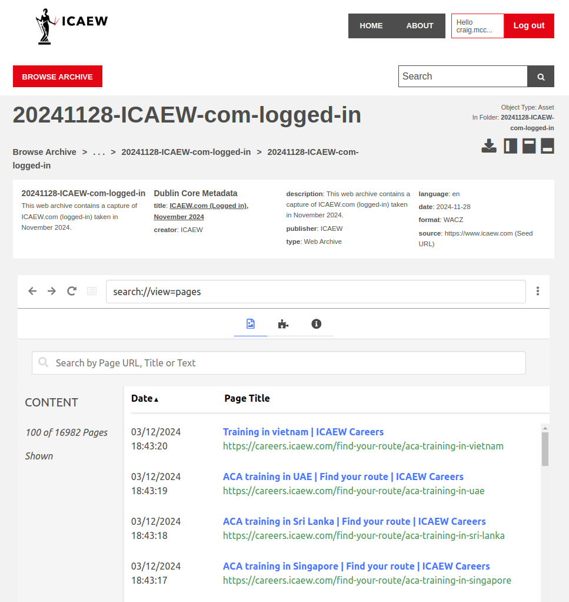
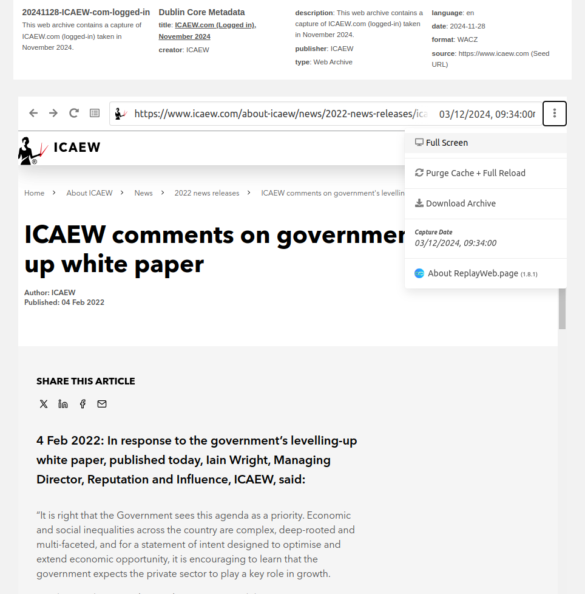
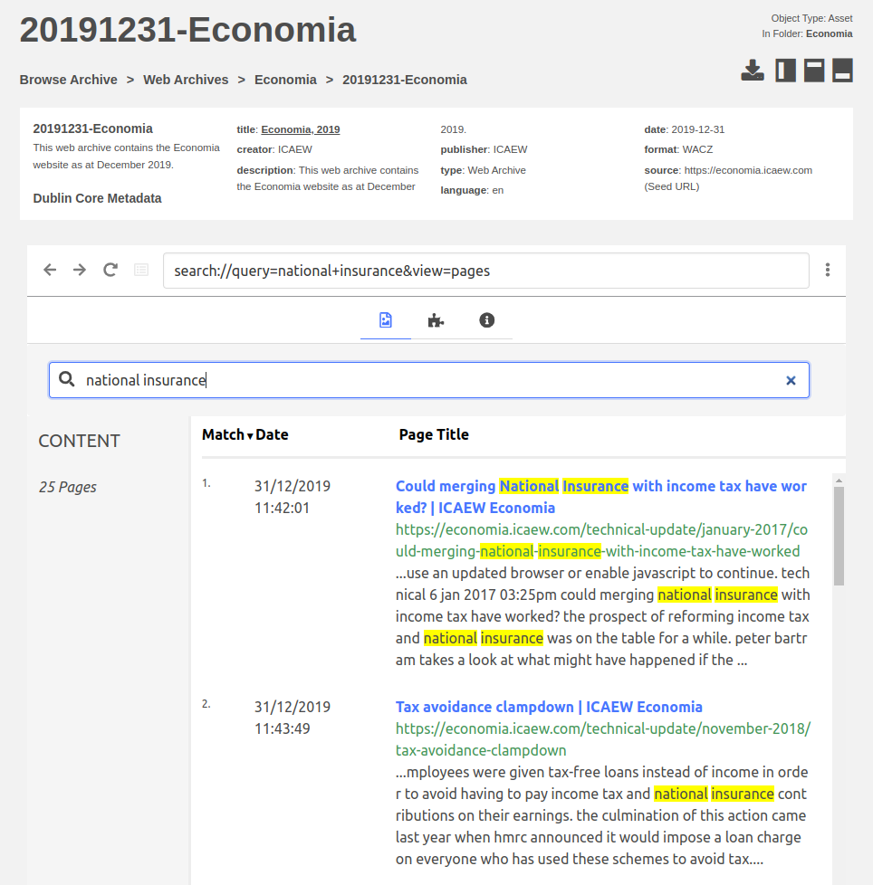

Accessing and Searching Web Archives
Overview of Captures
Purpose: This guide primarily focuses on full ICAEW.com captures, though the same principles apply to other collections.
Web collections are classified as either public or restricted: - Public captures - Full website crawls from a public perspective, without access to content behind login credentials - Restricted captures - Full website crawls from a logged-in perspective, capturing content accessible only to authenticated users
Note: For a comprehensive understanding of ICAEW.com captures, refer to the Web Crawl Process Overview.
Restricted Captures on Preservica
Accessing Archived Pages
Restricted web captures are hosted on Preservica under the top-level folder: Web Archives.
Important: You must be logged into Preservica to see the restricted collections. Without doing this, you will only see the public collections.
To explore a collection:
- Navigate to the desired folder in the portal.
- Viewing the capture is made possible by the in-built PyWb-based web archive player.
Example of a restricted web archive containing 16,982 pages:

Tip: Clicking on a URL will open the archived webpage. A good tip is to make use of the "Full Screen" functionality:

Full-Text Search in Preservica
Purpose: Preservica supports full-text search for certain collections, provided the text has been indexed. Use this feature to locate specific content by keyword or phrase.
Example of a full-text search result:

Public Captures on Archive-It
Note: Public web collections on Archive-It are identified by a collection ID. For ICAEW.com public captures, the collection ID is 16306.
Accessing Archived Pages
To check if a URL has been captured:
- Prepend the target URL with:
https://wayback.archive-it.org/16306/*/ - Example:
Target URL:https://www.icaew.com/technical/Technology/Artificial-intelligence
Archive-It URL:
https://wayback.archive-it.org/16306/*/https://www.icaew.com/technical/Technology/Artificial-intelligence
The resulting Archive-It page provides: - A timeline of captures. - Dates when the page was archived. - Links to archived versions.
If the page is missing, a "not found" message will be displayed.
Full-Text Search in Archive-It
Note: Archive-It supports full-text search within public collections, unlike the Internet Archive.
- Visit the collection search page:
https://archive-it.org/collections/16306 -
Click Search Page Text:

-
Set Results per page to Unlimited:

-
Enter your search query using these options:
- Contains all of: Includes all specified terms.
- Exact phrase: Searches for an exact match.
- Not containing: Excludes specific terms.
- Optionally, filter results by date range.
- Click Advanced Search to start the search.
For detailed instructions, refer to the Archive-It Search Guide.
Captures Predating the ICAEW Digital Archive
Note: For captures preceding the ICAEW digital archive, use the Internet Archive's Wayback Machine.
Accessing Older Captures
To search for older versions of a URL:
- Prepend the URL with:
https://web.archive.org/web/*/ - Example:
Target URL:https://www.icaew.com/technical/Technology/Artificial-intelligence
Internet Archive URL:
https://web.archive.org/web/*/https://www.icaew.com/technical/Technology/Artificial-intelligence